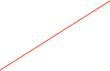

Met637 Particle Counter


The Met1 637 particle counter is a portable airborne particle counter with a small stable footprint. It can measure six particle sizes: 0.3, 0.5, 0.7, 1.0, 2.0, 5.0 µm. It communicates with ORCA using RS232 and can copy its data to a USB memory stick.
More details can be found in the manual.
When a count is in progress there is not much that you can do as most of the dialog’s functions are disabled. It is possible to stop the count anytime to change the parameters or to dump the existing data to the status log. Caution should be used when using scripts as most commands will stop a measurement in progress.
Data Formats
The Met637 object does not produce an ORCA data record at this time.
The number of seconds of wait time between measurements in Auto mode
Set the measurement units. Note that ORCA will not do any conversions and will use the reported values
Clears ALL data from the unit’s memory. Will ask for confirmation
The mode can be Auto or Manual. The manual mode will stop after one measurement. Auto mode will continue sequential measures until stopped by the user.
Start or Stop a measurement
Functions to Print the device’s memory to the status log
The last measurement reported to ORCA


The counts can be used in ORCA’s process controller. The max count value is used to scale process meters. The alarm value is used for the alarm point.